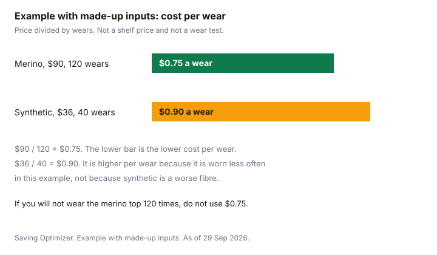

Clothing · Canada
Merino and Synthetic Base Layers in Canada: Staying Warm for Less
A heavier coat is the piece people price first. The layer against the skin is the piece you can add or peel off when the bus is warm and the platform is not. This page compares merino, other wool, synthetics, blends and cotton using only what a cited page actually says, then runs a cost-per-wear sum on made-up prices so the arithmetic is visible. It does not name a best top, and it does not print a shelf price. The coat decision stays on the winter coat guide. The method of dividing price by wears is the wardrobe cost-per-wear guide. Nothing here is medical advice. Cold injury is a reason to follow a local forecast and official safety page, not a clothing chart.
Disclosure: Discounted retailer gift cards and Amazon.ca storefront types are offer types. Saving Optimizer may earn a commission if a partner link is added later. No partnership is claimed. A gift card or a storefront link does not change a fibre label, a care symbol, or a warehouse price. Education only. This page does not rank base layers.
Key takeaways
- Parks Canada’s Kejimkujik page, checked 29 Sep 2026, says to dress in layers and adjust as you go, and to wear clothing that retains its insulating properties when wet. It names polypropylene, fleece, wool and Gore-Tex, and it says not to wear cotton.
- A fibre at 5 percent or more of the mass has to be named, with the percentage, in English and French. That is the Competition Bureau nutshell page, checked 29 Sep 2026. Dealer name and address, or a CA number, do not have to be bilingual.
- Care symbols are information. The national standard was withdrawn in October 2017. Wool’s recommended iron on that guide is medium, not exceeding 150°C. The symbol on your top is the rule, not a general merino recipe.
- Light, mid and heavy are hangtag words. This guide does not cite a grams-per-square-metre scale that turns those words into a temperature.
- Example with made-up inputs: $90 over 120 wears is $0.75 a wear. $36 over 40 wears is $0.90 a wear. Replace both prices with the tags in front of you. A US-made knitted top may be on Schedule 3 of the surtax order depending on classification: check with CBSA.
Why base layers beat a bigger coat
Parks Canada’s page for cold-related emergencies at Kejimkujik says to dress in layers and to adjust as you go, so you do not overcool or overheat. It also says to bring extra clothing and to replace wet clothes with dry ones before you get chilled. That is the practical case for a thin layer you can remove, rather than one shell you cannot vent. A base layer does not replace a coat in wind. It changes what is against your skin when the coat comes off indoors, and it is the piece you can swap if it gets wet. The coat’s own cost per wear, including how many winters you will actually wear it, is the coat guide. The house thermostat is a different bill: cutting the winter heating bill.
Children’s layers follow the same label rules, with a size that is this season’s size. The dollar side of a child’s kit, including Ontario’s clothing rebate where it applies, is the kids’ winter gear guide. Do not copy an adult cost-per-wear figure onto a child who will outgrow the top.
Merino vs synthetic vs blends
Merino is a kind of wool. The sources cited here do not define a warmth gap between merino and other wool, and they do not score odour or drying speed. What they do say is narrower, and the table stays inside it. Parks Canada names wool, polypropylene and fleece as examples of clothing that retains insulating properties when wet, and it says not to wear cotton, with jeans as the example. Gore-Tex is also in that list, as an outer example, not as a base-layer fibre. The Competition Bureau’s nutshell page is the label rule: when a fibre is 5 percent or more of the total fibre mass, the label shows the generic name and the percentage, in English and French. A photo that says merino, on a label that says 20 percent wool and 80 percent polyester, is the polyester top. Dealer identity is the company name and mailing address, or a CA identification number, and that part does not have to be bilingual. Quebec has extra French-language rules. The Bureau points readers to the Office québécois de la langue française.
| Fibre | When damp, from the cited page | Care the cited pages state | Label |
|---|---|---|---|
| Wool, including merino | Named by Parks Canada as clothing that retains insulating properties when wet. | Medium iron not exceeding 150°C is the recommended temperature the consumer-affairs guide prints for wool, with polyester, rayon, silk and triacetate. The wash is the symbol on the garment. | Generic name and percentage if the fibre is 5 percent or more, in English and French. |
| Synthetics named on those pages | Polypropylene and fleece are in the same Parks Canada list. | Low iron not exceeding 110°C is the recommended temperature for polypropylene, nylon, acrylic, modacrylic and spandex, and also for acetate. Again, the symbol governs. | Same 5 percent rule. Polyester has to be named when it is 5 percent or more, even if the hangtag leads with wool. |
| Blends | No separate damp rule on the Parks Canada page. Read each fibre. | One symbol for the garment. Do not invent a wash from the larger fibre alone. | The nutshell example is Body: 65 percent cotton, 35 percent polyester, with the French names beside them. |
| Cotton | Parks Canada says do not wear cotton, and gives jeans as the example, in the same instruction. | High iron not exceeding 200°C is the recommended temperature for cotton and linen. That is an iron setting, not a reason to choose cotton next to the skin in the cold. | Cotton at 5 percent or more is named with its percentage. A cotton base layer is still cotton. |
Weights explained
Light, midweight and heavy are words a brand prints. This guide does not cite a grams-per-square-metre standard, a tog rating, or a temperature range that those words must meet. Two tops both called midweight can be different cloth. The checks that are on a page you can read are the fibre percentages, the care symbol, and whether the top fits under the coat you already own. Try the layer with the coat, including sitting if you commute. A weight name that the label does not define is not a warmth promise. If a product page prints a grams figure, treat it as that seller’s figure for that style, and do not compare it with a number this guide did not cite.
| Made-up top | Price | Wears | Cost per wear |
|---|---|---|---|
| Merino, made up | $90 | 120 | $0.75 |
| Synthetic, made up | $36 | 40 | $0.90 |
Example with made-up inputs, the same sum as the chart: $90 divided by 120 is $0.75, and $36 divided by 40 is $0.90. The more expensive top costs less per wear only because this example wears it three times as often. If you will not get 120 wears, do not use $0.75. If the synthetic is the one you will actually keep, its $0.90 can still be the lower bill. Replace both rows with your receipt and your own count of wears.

Budget sources, including warehouse clubs
Buy the fibre you read, from whoever has it in your size, at a price you will divide by the wears you expect. A warehouse club is one place the assortment shows up. Membership rules, the satisfaction guarantee, and the fact that this site does not print a clothing shelf price are on the Costco clothing guide. Do not treat a Kirkland label as a merino grade. Read the percentages on that package.
A discounted retailer gift card is an offer type. It lowers the cash you pay only when the discount survives the fees and the card still works at that banner. Expiry and fee rules that a provincial page actually states are on the clothing gifts guide. An Amazon.ca storefront, including a brand store on that site, is another offer type. It is not a product pick. Read the seller name, the fibre line, and the return path before you pay. Price history for household goods on that site is a different guide. This page does not copy a live base-layer price from any storefront.
Ordering a top from outside Canada is a different bill. The surtax in the United States Surtax Order (2026) applies to goods that originate in the United States. Schedule 3 includes specific knitted lines, among them cotton T-shirts under 6109.10.00 and cotton or man-made knitted pullovers under 6110.20.00 and 6110.30.00. Chapter 61, checked 29 Sep 2026, prints 18 percent most-favoured-nation and UST Free on those three items. A US-made knitted top may be on Schedule 3 depending on classification: check with CBSA at 1-800-461-9999 or your carrier. The list covers specific tariff lines, not all clothing. This page does not say merino is covered, and it does not say merino is exempt. The worked examples for mail and courier thresholds are on the US clothing guide.
Care to prevent holes and shrinking
The Office of Consumer Affairs guide, checked 29 Sep 2026, says its material is for information only and that the Care Labelling of Textiles national standard was withdrawn by the Canadian General Standards Board in October 2017. Five symbols cover washing, bleaching, drying, ironing and professional cleaning. Temperatures appear in degrees Celsius or as dots. Bars show how severe the treatment is. Natural drying on that page includes line dry, drip dry, dry flat, and dry in the shade. Do not tumble dry is its own symbol. Heat the guide caps, or forbids, is the shrinking risk this page will name. It will not assign a merino wash temperature the symbol does not print.
Use the symbol you can see. A gentle hand wash not exceeding 40°C, or not exceeding 30°C, is a symbol on that guide, not a rule that all wool carries it. Machine washes are printed at maximums of 95, 70, 60, 50, 40 and 30 degrees, plus a normal wash at any temperature, and do not wash. If your top says do not tumble, air-dry it. Dry flat is the symbol for drying on a suitable flat surface after excess water is removed. A medium iron not exceeding 150°C is the recommended temperature the guide prints for wool. A low iron not exceeding 110°C is the one it prints for polypropylene and nylon. Do not iron is also a symbol. If the words and the symbol disagree, use the more cautious reading. The longer list of habits, including washing less and folding knits, is the make clothes last longer guide. Detergent prices and dryer energy stay on those guides. This page does not cite a tested recipe for holes, so it does not give one. Turn the top inside out if you want less abrasion on the face, and stop there.
Sources & date stamps
- Parks Canada, Cold-related emergencies, Kejimkujik National Park and National Historic Site, checked 29 Sep 2026. Dress in layers and adjust as you go. Clothing that retains insulating properties when wet: polypropylene, fleece, wool, Gore-Tex. Do not wear cotton, for example jeans. Replace wet clothes with dry ones before you get chilled.
- Competition Bureau, Labelling textile requirements in a nutshell, checked 29 Sep 2026. Fibre at 5 percent or more: generic name and percentage, English and French. Dealer name and address or CA number, not required to be bilingual. Permanent label through 10 cleanings for many articles, including shirts. Quebec: Office québécois de la langue française.
- Office of Consumer Affairs, Guide to Apparel and Textile Care Symbols, ised-isde.canada.ca, checked 29 Sep 2026. Information only. National standard withdrawn October 2017. Iron temperatures and the wash and dry symbols quoted above.
- CBSA, 2026 Customs Tariff, chapter 61, checked 29 Sep 2026. 6109.10.00, 6110.20.00 and 6110.30.00 print 18 percent most-favoured-nation and UST Free. Whether a base layer is one of those lines is check with CBSA, 1-800-461-9999.
- Costco clothing prices are not copied. Membership and returns are on the Costco clothing guide. The cost-per-wear rows are made-up inputs.
Frequently asked questions
Is merino worth the price for Canadian winters?
Worth here is cost per wear, not a fibre medal. Example with made-up inputs: a $90 top worn 120 times is $0.75 a wear, and a $36 top worn 40 times is $0.90 a wear. Those prices and wear counts are made up. Parks Canada’s Kejimkujik page names wool among clothing that keeps its insulating properties when wet, and it says not to wear cotton. A hangtag that says merino still has to show the fibre percentage. A blend that is mostly another fibre is a different product.
How is merino different from synthetic base layers?
The pages cited here do not publish a lab test of merino against polyester. Parks Canada groups wool with polypropylene and fleece as clothing that retains insulating properties when wet. The Office of Consumer Affairs guide, which is information only, prints a medium iron not exceeding 150°C as the recommended temperature for wool, and a low iron not exceeding 110°C for polypropylene, nylon and spandex, among other fibres. The symbol on the garment is the wash instruction. Odour and dry time are not stated on those pages.
Why is cotton a poor base layer in the cold?
Parks Canada’s Kejimkujik cold-weather page says to wear clothing that retains its insulating properties when wet, and it names polypropylene, fleece, wool and Gore-Tex. It says do not wear cotton, and it gives jeans as the example. It also says to replace wet clothes with dry ones before you get chilled. This guide does not add a lab figure for how fast cotton loses heat. If cotton is 5 percent or more of the fibre mass, the Competition Bureau’s nutshell page says the label has to name it, with the percentage, in English and French.
How do I wash merino so it lasts?
Follow the symbol on that garment. The Office of Consumer Affairs guide is for information only, and the national care-labelling standard was withdrawn in October 2017. The guide includes gentle hand washing not exceeding 40°C or 30°C, machine washes at stated maximums, and do not wash. It does not say every wool item is hand wash. A medium iron not exceeding 150°C is the recommended temperature it prints for wool. If the symbol bars the tumble dryer, use the natural-dry symbol instead, including dry flat. Longer habits are on the make-clothes-last guide.
Where can I find base layers for less?
A warehouse club, a clothing-store sale, a discounted retailer gift card, and an Amazon.ca storefront are offer types, not a ranking and not a named product. The Costco clothing guide has the membership rules and does not print a clothing shelf price. A gift-card discount helps only when the card is still worth more than you pay after fees, which the clothing gifts guide covers. Read the fibre label before the package price, and check the retailer’s page for the return window.
Researched and drafted with AI assistance and fact-checked against official Canadian sources. How we create content.